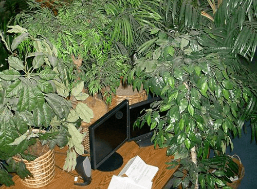
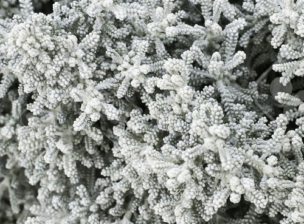
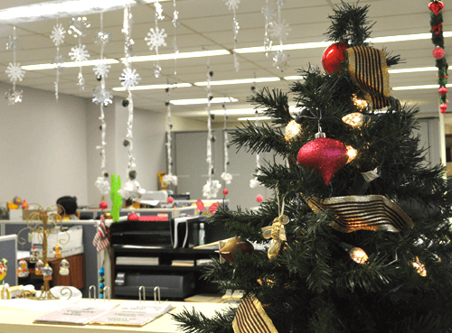

Plant themes
| Aloha | Siberia | Exotique Nordic |
|---|---|---|
|  |  |  |
| This rich theme includes exotic coconuts spilling all over the floor combined with palm trees that hang down and are always in the way of your workflow. This theme is very complicated, suitable for complex startups. | Dead plants everywhere. Plants sprayed with white color to give that cold secluded look. Is your startups policy very coldhearted? This is the setting for you! | A shitload of pine and spruce. Get that Norrlands inland-look in your office. Comes with a Christmas Decoration Extension Pack for the first 100 subscribers. (Bears not included). |